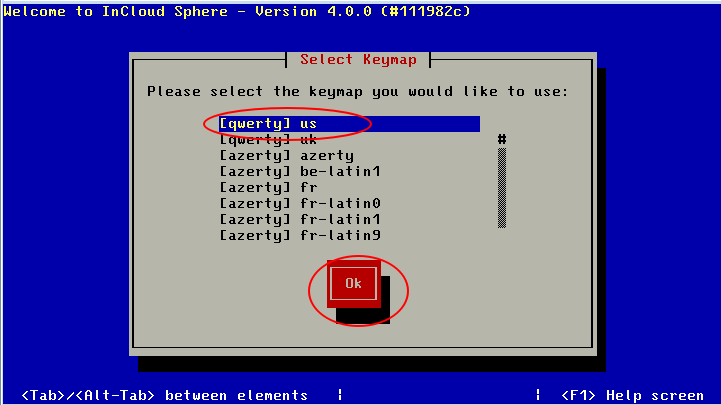
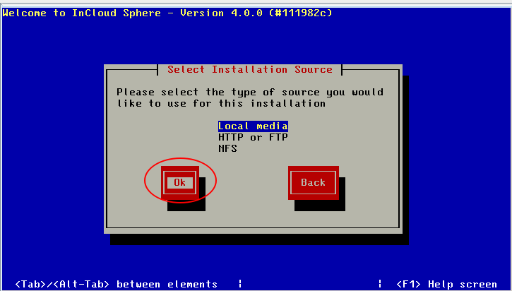
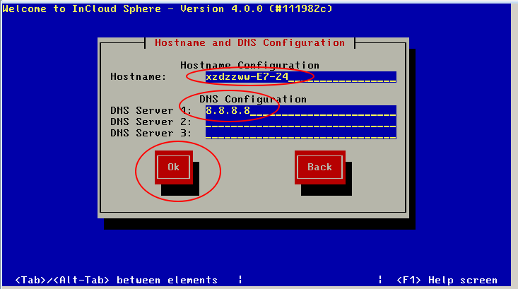
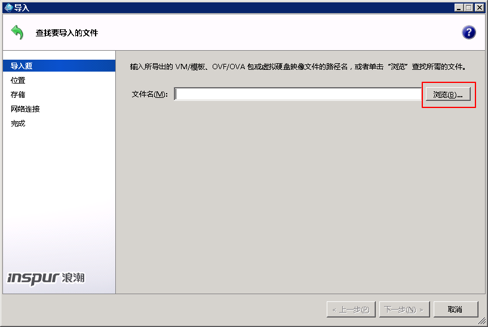
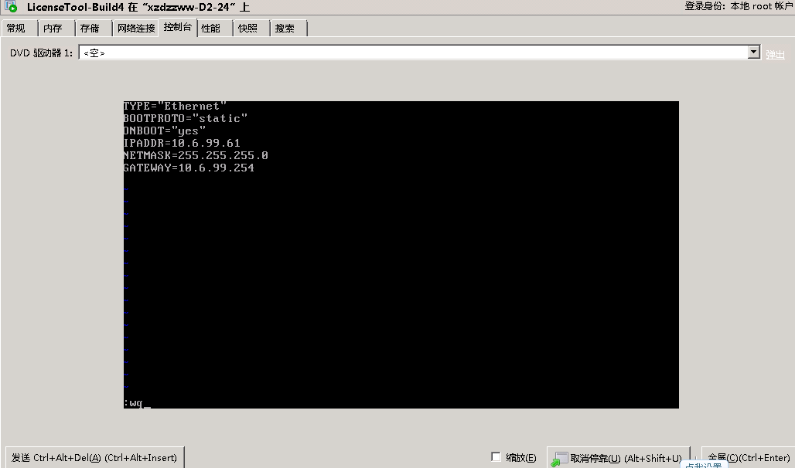
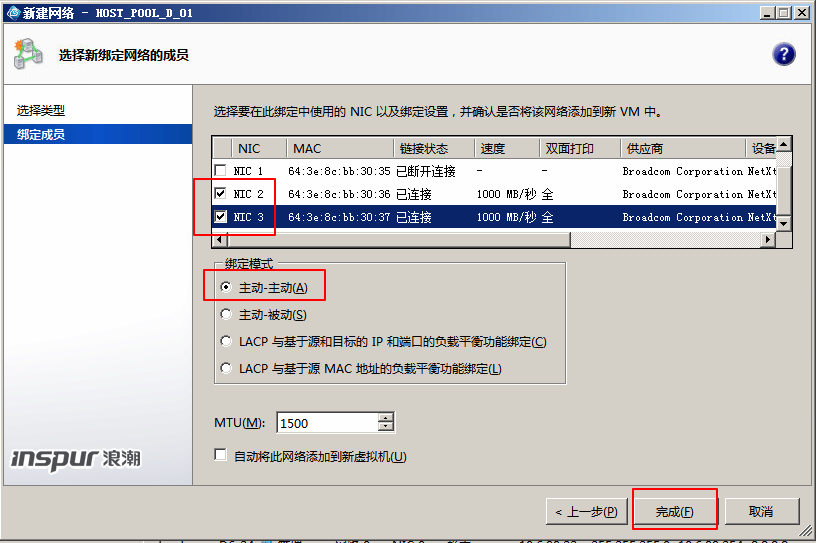
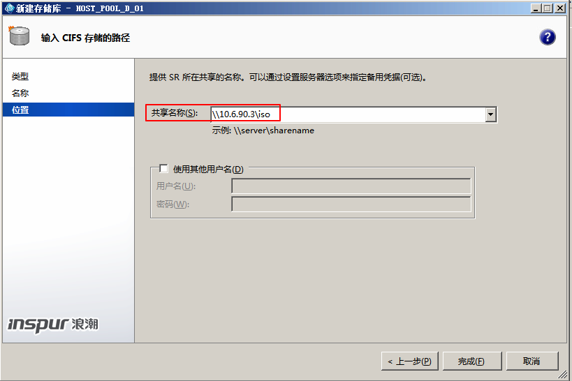
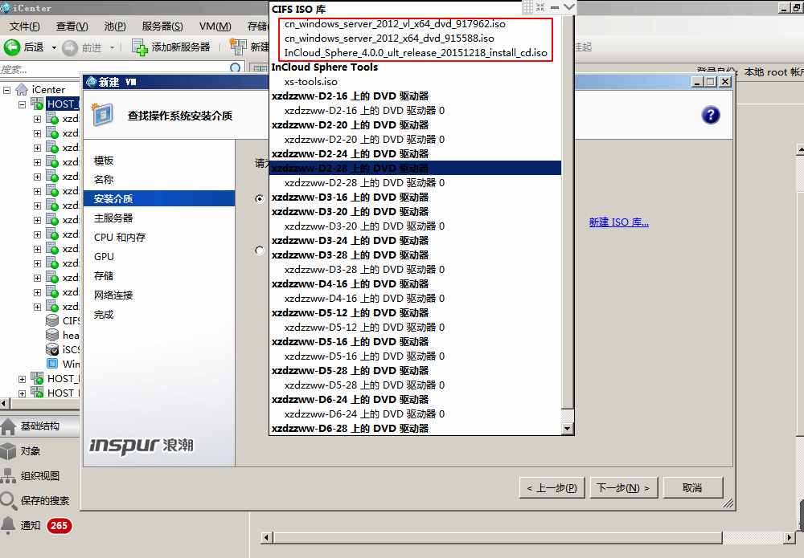
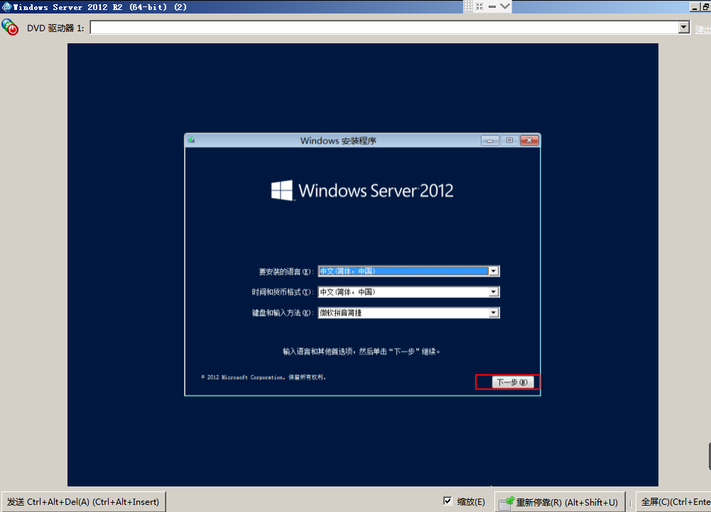

某项目XenServer虚拟化实施过程
更新日期:
项目背景介绍
该项目共有60台物理机，物理机配置为2颗XEON6核E5-2630，内存64GDDR3，4块600G硬盘SAS做Raid5，每台物理机有四个网口，由于现场网络环境和项目前期规划的限制，其中eth0做管理网，eth2和eth3做存储网；存储华为S5600T存储。虚拟化软件为浪潮的InCloudSphere4.0(ICS4.0)
实施过程
安装物理机系统
1、 使用ICS4.0 的安装光盘引导服务器启动。
2、 按F2选择高级模式安装系统。
注：1，安装前检查厂商提供的ICS硬件兼容列表，检查硬件的兼容性，部分硬件厂商需要使用硬件厂商的引导光盘安装操作系统。
2，ICS分别有两种安装模式，一种是标准模式，一种是高级模式，标准模式采用默认配置安装，高级模式可进入shell模式进行一些高级配置，如dom0内存和空间大小的配置等.
3、 输入shell，回车。
4、 编辑安装引导文件constans.py
5、将GPT_SUPPORT=True改为False（禁用GPT分区，使用MBR分区表），将root_size=4096改成40960（即40G大小）。
注：root_size，Domain0的root卷大小，使用较大的 root 卷大小可以有效防止由于Dom0 日志的突然快速增长导致 root 卷空间被占满从而引起 Dom0 运行异常的情况发生。
6、 保存后，输入exit退出shell模式。
7、 键盘选择“us”并“OK”继续

8、操作系统安装欢迎界面，选择“OK”继续安装。
9、 最终用户许可协议，选择“Accept EULA”继续安装。
10、 选择操作系统要安装的存储，默认选择本地服务器的磁盘阵列。
注：1，本地磁盘预先做好RAID。 2，thin provisioning功能需配合桌面虚拟化功能，如只是服务器虚拟化可不用开启。
11、 选择“Local media”并继续安装。

12、选择不安装系统的补丁包。
13、 选择不验证安装介质。
14、 设置密码。
15、 选择服务器管理网络的网口。
注：项目定义的eth2和eth3为存储数据网，eth0做为管理网和业务网。
16、 输入管理网的IP地址。
17、按命名规则输入HostName（参考附录“服务器命名规范”），并输入DNS。

18、 选择时区。
19、 设置NTP服务地址
注：因ICS4.0旗舰版对时间的要求非常高，所以建议给每台服务器配置NTP，如果实在没有，手动将服务器BIOS及系统的时间修改为一致（BIOS时间比系统时间慢8小时）
20、 选择安装系统。
21、 安装完毕，重启机器。
安装iCenter(ICS4.0管理客户端)
前提条件：
1、 准备好iCenter的安装文件。
2、 一台与管理网IP地址通讯的安装windows操作系统的主机。
3、 系统内需安装Microsoft .NET Framework 4.0。
安装过程
1、 双击打开InCloudSphere iCenter的安装文件。
2、 选择下一步。
3、 勾选“所有用户”，然后选择选择下一步。
4、 选择安装。
5、 安装完成。
添加主机
添加物理机到管理平台
1、 打开Inspur iCenter控制台。
2、 初次登陆，控制台界面如下。
3、 选择“添加服务器”。
4、 输入服务器的管理IP和用户名密码。然后选择“添加”。
5、 依次添加所有服务器，添加完成后界面如下。
打开多路径功能
1、 右键主机，选择“进入维护模式”。
2、 选择“进入维护模式”。
3、 右键主机，选择“属性”。
4、 选择多路径，勾选“在此服务器上启用多路径”。
5、 右键主机，选择“退出维护模式”，即完成开启主机多路径功能。
配置license
环境准备
1、 已结提前下载好证书管理服务器LTS虚拟机的OVF文件。
2、 已经将物理机添加到iCenter中。
3、 已经获得浪潮ICS4.0的License文件。
导入证书管理服务器LTS
1、 在主机上右键，选择“导入”。
2、 点击“浏览”。

3、 选择提前已经下载好的证书管理服务器的OVF文件。
4、 点击下一步。
5、 点击下一步。
6、 选择目标存储，然后点下一步。
7、 选择下一步。
8、 选择“不适用操作系统修复”，然后点击下一步。
9、 设置传输虚拟机所用的网络，选择使用“网络0”，即物理机的管理口，然后配置管理地址同网段的IP地址，然后点击下一步。
10、点击“完成”，导入证书管理服务器LTS完毕。
配置LTS
1、 选中LTS虚拟机，打开控制台。
2、 登录系统。
3、 配置该虚拟机的网络，使其与管理网处于同一网段。

4、 重启网络服务。
注册物理机
1、 打开浏览器，输入之前LTS虚拟机配置的IP地址。
2、 选择“管理节点列表”，点击“添加管理节点”
3、 输入物理机的IP地址、用户名和密码。然后点击“保存”。
4、 依上述步骤，依次添加所有物理机。
5、 选中“License列表”，选择“上传License”。
6、 选择“choose file”。
7、 添加好License文件，然后点击上传。
8、 选中“主机列表”，在未授权的主机上右键，然后选择“全部授权”。
9、 依次将所有主机授权。
10、 选中“主机列表”，点击“同步主机”。
11、 点击ok。
12、 主机信息同步成功，注册完成。
创建资源池
创建主机池
1、 点击“新建池”。
2、 输入资源池的名称；在“主服务器”一栏选择资源池的主服务器；在“其他成员”一栏选择资源池的成员。
3、 点击“创建”创建资源池。
4、 在资源池创建完成之后，也可以在主机上右键，将主机添加到资源池。
网络设置
ICS4.0网络介绍
ICS有三种网络类型：管理网络，存储网络，虚拟机网络。
- 管理网络：虚拟机默认的网络，用于内部管理，默认未开启motion功能。
- 存储网络：是ICS实现连接iscsi存储、HA功能的基础网络类型，要实现以上功能先创建此网络类型。
- 虚拟机网络：虚拟机对外通信的网络，如果要为生产虚拟机提供网络连接，则必须要创建该类型的tagged组。
管理网络
1、默认安装配置时的IP网络为管理网络。
2、在虚拟机的“网络管理”里也可以看到管理网的IP地址。
虚拟机网络设置
注：虚拟机网络与管理网都是通过网口0与外部进行通讯，VLAN号设置为1095，交换机上也做相应的VLAN配置。
1、选中需要配置的资源池，然后点击“添加网络”。
2、勾选“外部网络”，然后点击下一步。
4、 输入网络的名称，然后点击“下一步”。
5、 选择将该虚拟网络映射到物理网卡NIC0，即网口0，VLAN号设置为1095，然后点击“完成”。
6、 虚拟机网络设置完毕。
ICS4.0存储网络设置
注：在虚拟化环境中，只有IP SAN和NAS需要存储网络设置，如果是FC-SAN则不需要设置存储网络。
1、选中资源池，然后点击“添加网络”。
2、勾选“绑定网络”，然后点击“下一步”。
4、 选中NIC2和NIC3，将绑定模式勾选为“主动-主动”，然后点击完成。

5、 选中“绑定2+3”网络，点击“配置”。
6、 点击“添加IP地址”。
7、 输入存储的IP地址，然后点击确定。
添加存储
1、在资源池上右键，选择“新建SR”。
2、勾选“软件iSCI”，然后下一步。
3、输入存储名称，点击“下一步”。
4、 输入存储的IP地址，然后点击“扫描主机”。
5、选择目标IQN
6、 选择目标LUN，然后点击完成。
7、按照以上步骤，依次添加所有存储。
虚拟机部署
创建CIFS库
1、设置文件夹共享。
2、在资源池上右键，选择“新建SR”。
3、勾选“Windows文件共享”，点击下一步。
4、 输入名称，点击下一步。
5、 输入之前共享的文件夹的路径，点击完成。

6、 CIFS库添加完毕。
新建虚拟机
1、选中资源池，然后点击新建VM。
2、选择相应的VM模板，然后点击下一步。
3、输入虚拟机的名称，点击下一步。
4、 选择安装介质，从之前添加的CIFS库中选择对应的ISO文件。

5、 选择该虚机的主服务器。
6、 配置CPU数量和内存大小。
8、 物理机未配备GPU，直接下一步。
9、 点击“属性”，配置虚机的磁盘。
10、 配置磁盘的名称、大小和所在位置，然后点击确定。
11、 配置磁盘完毕，点击下一步。
12、 配置虚机的网络，将多余的网络删除，然后点击下一步。
13、 点击“立即创建”。
14、 虚拟机创建完毕。
安装操作系统
1、选择虚拟机，打开控制台，然后选择“取消停靠”。
2、选择安装语音、时间货币格式和键盘格式，点击下一步。

3、选择“现在安装”
4、 选择操作系统的版本，点击下一步继续。
5、 勾选“我接受许可条款”，点击下一步继续。
6、 选择自定义安装。
7、 选择要安装的磁盘，点击下一步继续。
8、安装完成。